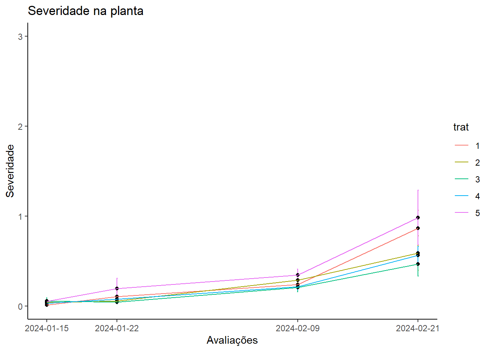

library(gsheet)
library(dplyr)
library(tidyverse)
library(performance)
library(ExpDes.pt)
library(epifitter)
library(DHARMa)
library(emmeans)
library(ggthemes)
library(multcomp)
library(agricolae)
library(AgroR)
library(corrplot)
theme_set(theme_classic())Projeto FIP606
PARTE 01 - Severidade
Esse conjunto de dados é uma variável resposta categórica contínua, que se refere a severidade de manchas foliares causadas por diversos patógenos na cultura do milho. Foram avaliadas as severidades na parcela e nas folhas, para avaliação da severidade nas folhas foram analisadas 3 folhas em diferentes posições, acima da espiga, a da espiga e abaixo, realizando uma média das posições. Os tratamentos e os blocos foram transformados em fator para que o programa entenda que são categorias a serem separadas e não fatores númericos.
sev <- gsheet2tbl("https://docs.google.com/spreadsheets/d/1fkuSU5GJ0ucCVQw5DY3wNOtaiJZpSXnZBCWjruIUNQQ/edit#gid=756072264")
# sev$sev_parcela <- as.numeric(sev$sev_parcela)sev2 <- sev |>
mutate(trat = as.factor(trat),
bloco = as.factor(bloco),
data_av = as.Date(data_av))Severidade na parcela
Curva de progresso da doença
Abaixo foi realizado a curva de progresso da doença considerando a média da severidade da parcela. Para cada tratamento, foi estabelecido os desvios padrão que mede o quanto os valores do conjuto de dados se desviam da média do conjunto. Foram feitas 4 avaliações, nos dias 15/01, 22/01, 09/02 e 21/02 do ano de 2024. A partir do gráfico plotado, observa-se um aumento da severidade da doença em relação ao tempo, em que houve uma maior inflexão da curva a partir da terceira avaliação atingindo o seu ponto máximo na quarta avaliação.
sev2 |>
group_by(trat, data_av) |>
summarise(mean_sev = mean(sev_parcela),
sevpar_se = (sd(sev_parcela)/sqrt(4))) |>
ggplot(aes(data_av, mean_sev, color = trat))+
facet_wrap(~trat) +
geom_errorbar(aes(ymin = mean_sev - sevpar_se,
ymax = mean_sev + sevpar_se),
width = 0.1)+
geom_text(aes(x = as.Date("2024-01-15"),
y = 3,
label = ""),
color = "#262625",
show.legend = FALSE,
size = 4)+
geom_text(aes(x = as.Date("2024-01-22"),
y = 3,
label = ""),
color = "#262625",
show.legend = FALSE,
size = 4)+
geom_text(aes(x = as.Date("2024-02-09"),
y = 3,
label = ""),
color = "#262625",
show.legend = FALSE,
size = 4)+
geom_text(aes(x = as.Date("2024-02-21"),
y = 3,
label = ""),
color = "#262625",
show.legend = FALSE,
size = 4)+
geom_point(color = "black")+
geom_line()+
labs(title = "Severidade na parcela",
x = "Avaliações",
y = "Severidade")+
scale_x_date(breaks = as.Date( c("2024-01-15",
"2024-01-22",
"2024-02-09",
"2024-02-21"))) +
theme(legend.title.position = "bottom")+
theme_classic()sev2 |>
group_by(trat, data_av) |>
summarise(mean_sev = mean(sev_parcela),
sevpar_se = (sd(sev_parcela)/sqrt(4))) |>
ggplot(aes(data_av, mean_sev, color = trat))+
geom_errorbar(aes(ymin = mean_sev - sevpar_se,
ymax = mean_sev + sevpar_se),
width = 0.1)+
geom_text(aes(x = as.Date("2024-01-15"),
y = 3,
label = ""),
color = "#262625",
show.legend = FALSE,
size = 4)+
geom_text(aes(x = as.Date("2024-01-22"),
y = 3,
label = ""),
color = "#262625",
show.legend = FALSE,
size = 4)+
geom_text(aes(x = as.Date("2024-02-09"),
y = 3,
label = ""),
color = "#262625",
show.legend = FALSE,
size = 4)+
geom_text(aes(x = as.Date("2024-02-21"),
y = 3,
label = ""),
color = "#262625",
show.legend = FALSE,
size = 4)+
geom_point(color = "black")+
geom_line()+
labs(title = "Severidade na parcela",
x = "Avaliações",
y = "Severidade")+
scale_x_date(breaks = as.Date( c("2024-01-15",
"2024-01-22",
"2024-02-09",
"2024-02-21"))) +
theme(legend.title.position = "bottom")+
theme_classic()Área abaixo da curva - parcela
O cálculo da área abaixo da curva da progressão de uma doença foi usado para quantificar e comparar a evolução manchas foliares ao longo do tempo, sendo utilizado para avaliar os tratamentos aplicados, entender a dinâmica das doenças e como os tratamentos influenciam no progresso da doença.
curva_par <- sev2 |>
group_by(trat, bloco) |>
summarise(aacpd = AUDPC(ava, sev_parcela))
curva_par# A tibble: 20 × 3
# Groups: trat [5]
trat bloco aacpd
<fct> <fct> <dbl>
1 1 1 0.45
2 1 2 2.45
3 1 3 2.85
4 1 4 1.75
5 2 1 0.7
6 2 2 2.35
7 2 3 2.45
8 2 4 1.3
9 3 1 0.45
10 3 2 1.75
11 3 3 2.1
12 3 4 1.45
13 4 1 0.8
14 4 2 3.1
15 4 3 1.75
16 4 4 1.55
17 5 1 0.95
18 5 2 3.05
19 5 3 3.2
20 5 4 2.55Testes de premissas e ANOVA
Foi atribuido um modelo linear às curvas de progresso e após isso foi feita a análise de variância (ANOVA) para calcular as possíveis diferenças. A partir da ANOVA, é possível afirmar que houve diferença estatística entre as médias e que os tratamentos e os blocos tiveram influência na severidade, uma vez que o p-valor dos tratamentos foi de 0,025 e o do bloco foi de 0,009, sendo assim aceita a hipótese alternativa e rejeita a hipótese nula, admitindo que há diferença entre as médias.
m_curva_par <-lm(aacpd ~ trat + factor(bloco),
data = curva_par)
check_heteroscedasticity(m_curva_par)OK: Error variance appears to be homoscedastic (p = 0.338).check_normality(m_curva_par)OK: residuals appear as normally distributed (p = 0.901).anova(m_curva_par)Analysis of Variance Table
Response: aacpd
Df Sum Sq Mean Sq F value Pr(>F)
trat 4 2.1637 0.5409 4.1286 0.02486 *
factor(bloco) 3 11.3490 3.7830 28.8733 9.008e-06 ***
Residuals 12 1.5723 0.1310
---
Signif. codes: 0 '***' 0.001 '**' 0.01 '*' 0.05 '.' 0.1 ' ' 1Uma vez que a análise de variância indicou que existe pelo menos uma média que difere das outras, surge a necessidade de aplicar um teste de médias para separar as médias em um ou mais grupos e verificar se mais de um tratamento difere do outro estatisticamente. Com o uso do emmeas e da função “cld” podemos separar as médias e agrupá-las conforme a sua diferença estatística. Portanto, é possível afirmar que o tratamento 3 diferiu estatisticamente do tratamento 5 e apresentou o menor valor de severidade entre as médias calculadas, porém, não apresentou diferença estatística com relação aos tratamentos 1, 2 e 4.
medias_m_curva_par <- emmeans(m_curva_par, ~ trat)
medias_m_curva_par trat emmean SE df lower.CL upper.CL
1 1.88 0.181 12 1.48 2.27
2 1.70 0.181 12 1.31 2.09
3 1.44 0.181 12 1.04 1.83
4 1.80 0.181 12 1.41 2.19
5 2.44 0.181 12 2.04 2.83
Results are averaged over the levels of: bloco
Confidence level used: 0.95 cld(medias_m_curva_par, Letters = letters) trat emmean SE df lower.CL upper.CL .group
3 1.44 0.181 12 1.04 1.83 a
2 1.70 0.181 12 1.31 2.09 ab
4 1.80 0.181 12 1.41 2.19 ab
1 1.88 0.181 12 1.48 2.27 ab
5 2.44 0.181 12 2.04 2.83 b
Results are averaged over the levels of: bloco
Confidence level used: 0.95
P value adjustment: tukey method for comparing a family of 5 estimates
significance level used: alpha = 0.05
NOTE: If two or more means share the same grouping symbol,
then we cannot show them to be different.
But we also did not show them to be the same. cv.model(m_curva_par)[1] 19.56584Foi criada outra tabela para filtrar os valores da avaliação 4, visto que a maior severidade (Ymax) foi observado na última avaliação. De modo semelhante aos processos anteriores, atribuiu-se o objeto ymax a um modelo linear, testou-se as premissas e realizou-se a analise de variância. Os resultados mostraram normalidade e heterocedasticidade do conjunto de dados. Já a análise de variância indicou um P-valor de 0,043, indicando que pelo menos uma média difere das outras. Entretanto, quando realizado o teste de médias de Tukey, este indicou que não havia diferença estatística entre as médias. (explicar a matemática por trás do teste) Como o teste usado é muito rigoroso (dms alta), ele não conseguiu separar as médias em grupos diferentes. Desta forma, foi utilizado um teste estatístico menos rigoroso (LSD), que conseguiu separar as médias em 3 grupos distintos. Conforme observado no teste, é possível afirmar que os tratamentos 1 e 3 diferiram entre si apresentando, porém não houve diferença estatística entre os tratamentos 2, 4 e 5, como é possível observar no gráfico plotado.
sev3 <- sev2 |>
filter(ava == 4)
sev3# A tibble: 20 × 8
parcela trat bloco hib data_av ava sev_parcela sev_med_pl
<chr> <fct> <fct> <chr> <date> <dbl> <dbl> <dbl>
1 A101 1 1 BM 990 2024-02-21 4 0.7 0.41
2 A201 1 2 BM 990 2024-02-21 4 3.5 1.16
3 A301 1 3 BM 990 2024-02-21 4 4.2 1.24
4 A401 1 4 BM 990 2024-02-21 4 2 0.66
5 A102 2 1 BM 990 2024-02-21 4 1 0.2
6 A202 2 2 BM 990 2024-02-21 4 2.5 0.91
7 A302 2 3 BM 990 2024-02-21 4 2.5 0.92
8 A402 2 4 BM 990 2024-02-21 4 1 0.33
9 A103 3 1 BM 990 2024-02-21 4 0.5 0.47
10 A203 3 2 BM 990 2024-02-21 4 2 0.83
11 A303 3 3 BM 990 2024-02-21 4 2.1 0.17
12 A403 3 4 BM 990 2024-02-21 4 1 0.41
13 A110 4 1 BM 990 2024-02-21 4 1 0.42
14 A210 4 2 BM 990 2024-02-21 4 3.5 0.86
15 A310 4 3 BM 990 2024-02-21 4 1.8 0.49
16 A410 4 4 BM 990 2024-02-21 4 1 0.49
17 V111 5 1 BM 990 2024-02-21 4 1.5 0.65
18 V211 5 2 BM 990 2024-02-21 4 3 0.77
19 V311 5 3 BM 990 2024-02-21 4 2.9 1.89
20 V411 5 4 BM 990 2024-02-21 4 2.5 0.63ymax <- lm(sev_parcela ~ trat + factor(bloco),
data = sev3)
ymax
Call:
lm(formula = sev_parcela ~ trat + factor(bloco), data = sev3)
Coefficients:
(Intercept) trat2 trat3 trat4 trat5
1.530 -0.850 -1.200 -0.775 -0.125
factor(bloco)2 factor(bloco)3 factor(bloco)4
1.960 1.760 0.560 check_normality(ymax)OK: residuals appear as normally distributed (p = 0.797).check_heteroscedasticity(ymax) OK: Error variance appears to be homoscedastic (p = 0.219).anova(ymax)Analysis of Variance Table
Response: sev_parcela
Df Sum Sq Mean Sq F value Pr(>F)
trat 4 4.153 1.0383 3.4427 0.0428763 *
factor(bloco) 3 13.366 4.4553 14.7731 0.0002481 ***
Residuals 12 3.619 0.3016
---
Signif. codes: 0 '***' 0.001 '**' 0.01 '*' 0.05 '.' 0.1 ' ' 1medias_ymax <- emmeans(ymax, ~ bloco)
medias_ymax bloco emmean SE df lower.CL upper.CL
1 0.94 0.246 12 0.405 1.48
2 2.90 0.246 12 2.365 3.44
3 2.70 0.246 12 2.165 3.24
4 1.50 0.246 12 0.965 2.04
Results are averaged over the levels of: trat
Confidence level used: 0.95 cld(medias_ymax, Letters = letters) bloco emmean SE df lower.CL upper.CL .group
1 0.94 0.246 12 0.405 1.48 a
4 1.50 0.246 12 0.965 2.04 a
3 2.70 0.246 12 2.165 3.24 b
2 2.90 0.246 12 2.365 3.44 b
Results are averaged over the levels of: trat
Confidence level used: 0.95
P value adjustment: tukey method for comparing a family of 4 estimates
significance level used: alpha = 0.05
NOTE: If two or more means share the same grouping symbol,
then we cannot show them to be different.
But we also did not show them to be the same. model <- aov(sev_parcela ~ trat, data = sev3)
snk_test <- SNK.test(model, "trat", group = TRUE)
print(snk_test)$statistics
MSerror Df Mean CV
1.132333 15 2.01 52.94087
$parameters
test name.t ntr alpha
SNK trat 5 0.05
$snk
Table CriticalRange
2 3.014325 1.603789
3 3.673378 1.954442
4 4.075974 2.168645
5 4.366985 2.323479
$means
sev_parcela std r se Min Max Q25 Q50 Q75
1 2.600 1.5641824 4 0.5320558 0.7 4.2 1.675 2.75 3.675
2 1.750 0.8660254 4 0.5320558 1.0 2.5 1.000 1.75 2.500
3 1.400 0.7788881 4 0.5320558 0.5 2.1 0.875 1.50 2.025
4 1.825 1.1786291 4 0.5320558 1.0 3.5 1.000 1.40 2.225
5 2.475 0.6849574 4 0.5320558 1.5 3.0 2.250 2.70 2.925
$comparison
NULL
$groups
sev_parcela groups
1 2.600 a
5 2.475 a
4 1.825 a
2 1.750 a
3 1.400 a
attr(,"class")
[1] "group"tukey_contrast <- contrast(medias_ymax, method = "tukey")
print(tukey_contrast) contrast estimate SE df t.ratio p.value
bloco1 - bloco2 -1.96 0.347 12 -5.643 0.0005
bloco1 - bloco3 -1.76 0.347 12 -5.067 0.0014
bloco1 - bloco4 -0.56 0.347 12 -1.612 0.4082
bloco2 - bloco3 0.20 0.347 12 0.576 0.9374
bloco2 - bloco4 1.40 0.347 12 4.031 0.0078
bloco3 - bloco4 1.20 0.347 12 3.455 0.0214
Results are averaged over the levels of: trat
P value adjustment: tukey method for comparing a family of 4 estimates dbc(trat = sev3$trat, bloco = sev3$bloco, resp = sev3$sev_parcela, mcomp = "lsd")------------------------------------------------------------------------
Quadro da analise de variancia
------------------------------------------------------------------------
GL SQ QM Fc Pr>Fc
Tratamento 4 4.153 1.0383 3.4427 0.042876
Bloco 3 13.366 4.4553 14.7731 0.000248
Residuo 12 3.619 0.3016
Total 19 21.138
------------------------------------------------------------------------
CV = 27.32 %
------------------------------------------------------------------------
Teste de normalidade dos residuos
valor-p: 0.7974041
De acordo com o teste de Shapiro-Wilk a 5% de significancia, os residuos podem ser considerados normais.
------------------------------------------------------------------------
------------------------------------------------------------------------
Teste de homogeneidade de variancia
valor-p: 0.5228209
De acordo com o teste de oneillmathews a 5% de significancia, as variancias podem ser consideradas homogeneas.
------------------------------------------------------------------------
Teste t (LSD)
------------------------------------------------------------------------
Grupos Tratamentos Medias
a 1 2.6
ab 5 2.475
abc 4 1.825
bc 2 1.75
c 3 1.4
------------------------------------------------------------------------sev3 |> group_by(trat) |>
summarise(sevpar_mean = mean(sev_parcela),
sevpar_se = (sd(sev_parcela)/sqrt(4))) |>
ggplot(aes(factor(trat), sevpar_mean, color = trat)) +
geom_point(size = 3) +
geom_errorbar(aes(ymin = sevpar_mean - sevpar_se,
ymax = sevpar_mean + sevpar_se),
width = 0.1) +
theme_classic() +
labs(x = "Tratamentos",
y = "Severidade média da parcela")Eficácia de controle
A eficácia de controle mostra o quanto o tratamento foi eficiente em comparação com o tratamento controle.
sev3 |> group_by(trat) |>
summarise(sevpar_mean = mean(sev_parcela),
sevpar_se = (sd(sev_parcela)/sqrt(4))) |>
mutate(control = 1- sevpar_mean/2.475)# A tibble: 5 × 4
trat sevpar_mean sevpar_se control
<fct> <dbl> <dbl> <dbl>
1 1 2.6 0.782 -0.0505
2 2 1.75 0.433 0.293
3 3 1.4 0.389 0.434
4 4 1.82 0.589 0.263
5 5 2.48 0.342 0 Severidade médias nas plantas
Foram avaliadas as severidades na parcela e nas folhas, para avaliação da severidade nas folhas foram analisadas 3 folhas em diferentes posições, acima da espiga, a da espiga e abaixo, realizando uma média das posições das folhas.
sev2 |>
group_by(trat, data_av) |>
summarise(mean_sevpl = mean(sev_med_pl),
sevmed_se = (sd(sev_med_pl)/sqrt(4))) |>
ggplot(aes(data_av, mean_sevpl, color = trat))+
#facet_wrap(~trat) +
geom_errorbar(aes(ymin = mean_sevpl - sevmed_se,
ymax = mean_sevpl + sevmed_se),
width = 0.1)+
geom_text(aes(x = as.Date("2024-01-15"),
y = 3,
label = ""),
color = "#262625",
show.legend = FALSE,
size = 4)+
geom_text(aes(x = as.Date("2024-01-22"),
y = 3,
label = ""),
color = "#262625",
show.legend = FALSE,
size = 4)+
geom_text(aes(x = as.Date("2024-02-09"),
y = 3,
label = ""),
color = "#262625",
show.legend = FALSE,
size = 4)+
geom_text(aes(x = as.Date("2024-02-21"),
y = 3,
label = ""),
color = "#262625",
show.legend = FALSE,
size = 4)+
geom_point(color = "black")+
geom_line()+
labs(title = "Severidade na planta",
x = "Avaliações",
y = "Severidade")+
scale_x_date(breaks = as.Date( c("2024-01-15",
"2024-01-22",
"2024-02-09",
"2024-02-21"))) +
theme(legend.title.position = "bottom")+
theme_classic()
Área abaixo da curva
curva_pl <- sev2 |>
group_by(trat, bloco) |>
summarise(aacpd = AUDPC(ava, sev_med_pl))
curva_pl# A tibble: 20 × 3
# Groups: trat [5]
trat bloco aacpd
<fct> <fct> <dbl>
1 1 1 0.385
2 1 2 1.01
3 1 3 0.84
4 1 4 0.9
5 2 1 0.43
6 2 2 0.995
7 2 3 0.78
8 2 4 0.45
9 3 1 0.56
10 3 2 0.665
11 3 3 0.215
12 3 4 0.625
13 4 1 0.35
14 4 2 0.875
15 4 3 0.555
16 4 4 0.6
17 5 1 0.6
18 5 2 0.905
19 5 3 1.98
20 5 4 0.765ANOVA
m_curva_pl <-lm(aacpd ~ trat + factor(bloco),
data = curva_pl)
check_heteroscedasticity(m_curva_pl)Warning: Heteroscedasticity (non-constant error variance) detected (p = 0.005).check_normality(m_curva_pl)OK: residuals appear as normally distributed (p = 0.137).anova(m_curva_pl)Analysis of Variance Table
Response: aacpd
Df Sum Sq Mean Sq F value Pr(>F)
trat 4 0.72356 0.18089 1.6989 0.2147
factor(bloco) 3 0.60153 0.20051 1.8831 0.1863
Residuals 12 1.27772 0.10648 Não atendeu a premissa de heterocedasticidade. Temos como opção realizar alguma conversão.
Conversão 01 - raiz quadrada
sev2$raiz_sev2 <- sqrt(sev2$sev_med_pl)curva_pl_r <- sev2 |>
group_by(trat, bloco) |>
summarise(aacpd = AUDPC(ava, raiz_sev2))
curva_pl_r# A tibble: 20 × 3
# Groups: trat [5]
trat bloco aacpd
<fct> <fct> <dbl>
1 1 1 0.862
2 1 2 1.51
3 1 3 1.03
4 1 4 1.55
5 2 1 0.798
6 2 2 1.57
7 2 3 1.14
8 2 4 1.13
9 3 1 1.13
10 3 2 1.21
11 3 3 0.679
12 3 4 1.26
13 4 1 0.785
14 4 2 1.51
15 4 3 0.907
16 4 4 1.26
17 5 1 1.19
18 5 2 1.54
19 5 3 2.12
20 5 4 1.34 m_curva_pl_r <-lm(aacpd ~ trat + factor(bloco),
data = curva_pl_r)
check_heteroscedasticity(m_curva_pl_r)OK: Error variance appears to be homoscedastic (p = 0.179).check_normality(m_curva_pl_r) OK: residuals appear as normally distributed (p = 0.202).anova(m_curva_pl_r)Analysis of Variance Table
Response: aacpd
Df Sum Sq Mean Sq F value Pr(>F)
trat 4 0.57906 0.144766 1.7538 0.20298
factor(bloco) 3 0.71123 0.237078 2.8722 0.08053 .
Residuals 12 0.99052 0.082543
---
Signif. codes: 0 '***' 0.001 '**' 0.01 '*' 0.05 '.' 0.1 ' ' 1Premissas atendidas: OK.
sev |>
group_by(trat) |>
summarise(med_sev_par = mean(sev_parcela),
sd_sev_par = sd(sev_parcela),
var_sev_par = var(sev_parcela))# A tibble: 5 × 4
trat med_sev_par sd_sev_par var_sev_par
<dbl> <dbl> <dbl> <dbl>
1 1 0.806 1.29 1.65
2 2 0.662 0.789 0.622
3 3 0.544 0.657 0.432
4 4 0.694 0.881 0.777
5 5 0.944 1.04 1.07 sev3$raiz_sev2 <- sqrt(sev3$sev_med_pl)Ymax nas plantas
ymax_pl <- lm(raiz_sev2 ~ trat + factor(bloco),
data = sev3)
ymax_pl
Call:
lm(formula = raiz_sev2 ~ trat + factor(bloco), data = sev3)
Coefficients:
(Intercept) trat2 trat3 trat4 trat5
0.75356 -0.17713 -0.24852 -0.16697 0.05223
factor(bloco)2 factor(bloco)3 factor(bloco)4
0.30390 0.26648 0.05870 check_normality(ymax_pl)OK: residuals appear as normally distributed (p = 0.689).check_heteroscedasticity(ymax_pl) OK: Error variance appears to be homoscedastic (p = 0.291).anova(ymax_pl)Analysis of Variance Table
Response: raiz_sev2
Df Sum Sq Mean Sq F value Pr(>F)
trat 4 0.26136 0.065339 1.8617 0.18206
factor(bloco) 3 0.33938 0.113127 3.2232 0.06118 .
Residuals 12 0.42117 0.035097
---
Signif. codes: 0 '***' 0.001 '**' 0.01 '*' 0.05 '.' 0.1 ' ' 1medias_ymax_pl <- emmeans(ymax_pl, ~ bloco)
medias_ymax_pl bloco emmean SE df lower.CL upper.CL
1 0.645 0.0838 12 0.463 0.828
2 0.949 0.0838 12 0.767 1.132
3 0.912 0.0838 12 0.729 1.095
4 0.704 0.0838 12 0.522 0.887
Results are averaged over the levels of: trat
Confidence level used: 0.95 cld(medias_ymax_pl, Letters = letters) bloco emmean SE df lower.CL upper.CL .group
1 0.645 0.0838 12 0.463 0.828 a
4 0.704 0.0838 12 0.522 0.887 a
3 0.912 0.0838 12 0.729 1.095 a
2 0.949 0.0838 12 0.767 1.132 a
Results are averaged over the levels of: trat
Confidence level used: 0.95
P value adjustment: tukey method for comparing a family of 4 estimates
significance level used: alpha = 0.05
NOTE: If two or more means share the same grouping symbol,
then we cannot show them to be different.
But we also did not show them to be the same. sev3 |> group_by(trat) |>
summarise(mypl = mean(raiz_sev2),
sypl = (sd(raiz_sev2)/sqrt(4))) |>
ggplot(aes(factor(trat), mypl, color = trat)) +
geom_point(size = 3) +
geom_errorbar(aes(ymin = mypl - sypl,
ymax = mypl + sypl),
width = 0.1) +
theme_classic() +
labs(x = "Tratamentos",
y = "Severidade média das plantas")
PARTE 02 - Produtividade
Os dados são obtidos a partir de um experimento que visa analisar a interferência de diferentes fungicidas (nativo e bio ferti (fertlizante de silicato de potássio, como indutor de resistência)) e as diferentes ordens em que eles são aplicados sob a severidade das doenças de manchas foliares causadas por patogénos como: Stenocarpella sp., Diplodia sp., Bipolaris maydis e Bipolaris zeicola, Helmintosporiose sp. e entre outros agentes causais. É um experimento com delineamento em blocos casualizados, em que eram 4 blocos e 5 tratamentos, totalizando 20 parcelas. Em que, os tratamentos eram: Fertilizante + Fungicida + Fungicia (T1), Fungicida + Fertilizante + Funcida (T2), Fertilizante + Fertilizante + Fertilizante (T3), Fungicida (T4) e a testemunha (T5). Para a produtividade foi obtido o número de espigas e o peso dos grãos de 15 espigas, esses valores foram calculados gerando o peso médio de cada espiga e a partir disso, foi estipulado para 1 hectare, a produtividade do experimento, obtendo então uma varíavel resposta númerica contínua.
prod <- gsheet2tbl("https://docs.google.com/spreadsheets/d/1fkuSU5GJ0ucCVQw5DY3wNOtaiJZpSXnZBCWjruIUNQQ/edit#gid=0")
prod <- prod |>
mutate(trat = as.factor(trat),
bloco = as.factor(bloco))Visualização dos dados
Em um primeiro momento será realizada a análise dos dados de forma visual para buscar compreender a natureza dos dados e se eles seguem uma distribuição normal e uma homogeneidade das médias, também busca-se verificar se existe uma variação ou não nas médias apresentadas para então seguir com as análises estatísticas.A partir da visualização dos dados com o gráfico de boxplot e levando somente ele em consideração para a interpretação, podemos assumir que as médias estão próximas umas das outras e que existe pouca diferença entre os tratamentos, porém para o tratamento 1 pode-se assumir que existe algum outlier e em uma primeira visualização, existe uma indicação de que as médias estão normais. Agora, outros testes necessitam ser realizados para análise dos dados.
img1 <- prod |>
ggplot(aes(trat, prod_ha))+
geom_boxplot()+
geom_jitter(width = 0.2, color = "gray") +
stat_summary(fun.data = "mean_cl_boot", color = "black", size = 0.5)+
labs ( x = "Tratamento",
y = "Produtividade (Kg/Ha)") +
ylim(0, 13000)+
theme_classic()
img1Sumarizar os dados
prod |>
group_by(trat) |>
summarise(mean_prod_ha = mean(prod_ha),
sd_prod_ha = sd(prod_ha),
var_prod_ha = var(prod_ha))# A tibble: 5 × 4
trat mean_prod_ha sd_prod_ha var_prod_ha
<fct> <dbl> <dbl> <dbl>
1 1 10283. 2017. 4068199.
2 2 10599. 1268. 1606605.
3 3 10840. 527. 277859.
4 4 10560. 593. 351744.
5 5 10755. 635. 403504.Testar as premissas
Antes de utilizar qualquer teste para comparação de médias, é necessário testar se o conjunto de dados respeitam as premissas para então iniciar os testes de comparação de médias. Podemos usar várias opções, as que são utilizadas abaixo são os testes de shapiro wilk (para normalidade), o teste de bartlett (para homogeneidade). Da mesma forma, também pode ser utilizado as funções do pacote performance, que utiliza outros testes para averiguar a normalidade e homogeineidade dos dados. Portanto, a partir dos testes utilizados é possível afirmar que os dados seguem uma distribuição normal e homogênea. Dessa forma, o conjunto de dados respeita as premissas para a utilização do modelo e da ANOVA, portanto, as análises podem seguir normalmente.
ANOVA
Para verificar a diferença ou não entre as médias, será utilizada a ANOVA que servirá para identificar variabilidade do conjunto de dados, dentro do grupo e entre os grupos, assim como irá avaliar a significância estatística das diferenças observadas entre as médias dos grupos. A partir da atribuição do conjuntos de dados ao modelo linear, a ANOVA foi calculada abaixo e a partir dela podemos inferir que o p-valor obtido foi superior a 5% para o tratamento e para o bloco, indicando que não há significância, ou seja, não há diferença entre as médias dos tratamentos uma vez que o p-valor foi maior que 0,05 de modo que rejeitamos a hipótese alternativa e aceita a hipótese nula.
hist(prod$prod_ha)shapiro.test(prod$prod_ha)
Shapiro-Wilk normality test
data: prod$prod_ha
W = 0.94909, p-value = 0.3535bartlett.test(prod_ha ~trat, data = prod)
Bartlett test of homogeneity of variances
data: prod_ha by trat
Bartlett's K-squared = 7.4779, df = 4, p-value = 0.1127m1 <- lm(prod_ha ~trat + bloco, data = prod)
library(DHARMa)
plot(simulateResiduals(m1))library(performance)
check_normality(m1)OK: residuals appear as normally distributed (p = 0.783).check_heteroscedasticity(m1)OK: Error variance appears to be homoscedastic (p = 0.439).anova(m1)Analysis of Variance Table
Response: prod_ha
Df Sum Sq Mean Sq F value Pr(>F)
trat 4 733814 183453 0.1638 0.9527
bloco 3 6682547 2227516 1.9887 0.1695
Residuals 12 13441184 1120099 summary(m1)
Call:
lm(formula = prod_ha ~ trat + bloco, data = prod)
Residuals:
Min 1Q Median 3Q Max
-1393.90 -586.55 67.56 465.23 1535.36
Coefficients:
Estimate Std. Error t value Pr(>|t|)
(Intercept) 10527.97 669.36 15.728 2.26e-09 ***
trat2 315.92 748.36 0.422 0.6804
trat3 556.83 748.36 0.744 0.4712
trat4 276.84 748.36 0.370 0.7179
trat5 472.25 748.36 0.631 0.5398
bloco2 -1233.40 669.36 -1.843 0.0902 .
bloco3 233.07 669.36 0.348 0.7337
bloco4 21.47 669.36 0.032 0.9749
---
Signif. codes: 0 '***' 0.001 '**' 0.01 '*' 0.05 '.' 0.1 ' ' 1
Residual standard error: 1058 on 12 degrees of freedom
Multiple R-squared: 0.3556, Adjusted R-squared: -0.02034
F-statistic: 0.9459 on 7 and 12 DF, p-value: 0.5082Correlação Ymax
correlacao <- gsheet2tbl("https://docs.google.com/spreadsheets/d/1fkuSU5GJ0ucCVQw5DY3wNOtaiJZpSXnZBCWjruIUNQQ/edit#gid=1909308493")
plot1 <- correlacao |>
ggplot(aes(x = ymax_par, y = prod_ha))+
geom_point()+
theme_classic()+
geom_smooth(method = "lm")
plot2 <- correlacao |>
ggplot(aes(x = ymax_pl, y = prod_ha))+
geom_point()+
theme_classic()+
geom_smooth(method = "lm")
plot1plot2Correlação Ymax
prod3 <- correlacao |>
dplyr::select(ymax_par, prod_ha, ymax_pl)
corgraph(prod3) Var1 Var2 cor p
2 prod_ha ymax_par -0.3175051 0.17253441
3 ymax_pl ymax_par 0.7170089 0.00037408
6 ymax_pl prod_ha -0.3484439 0.13217008